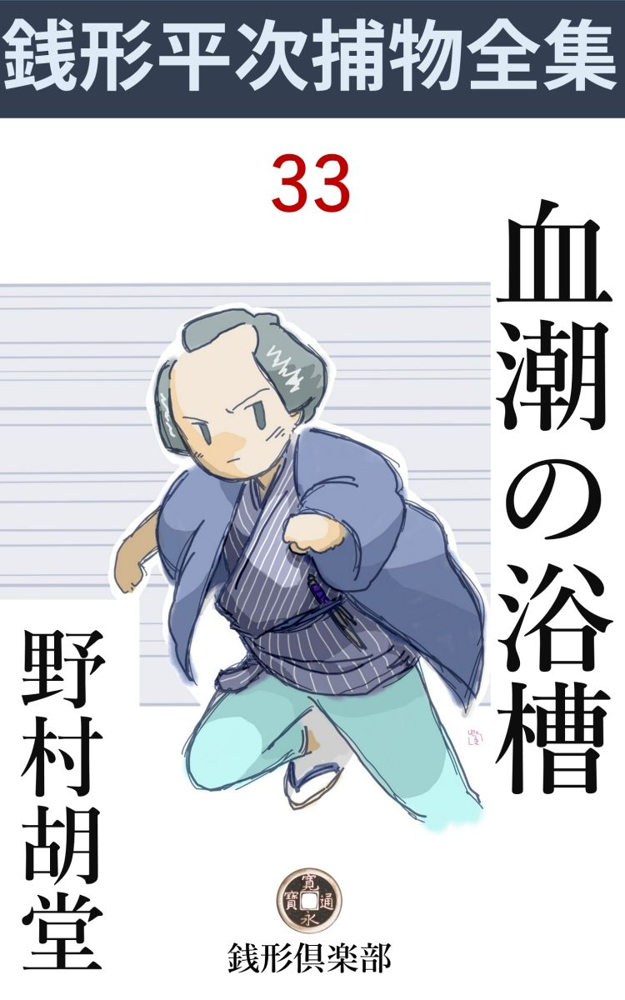
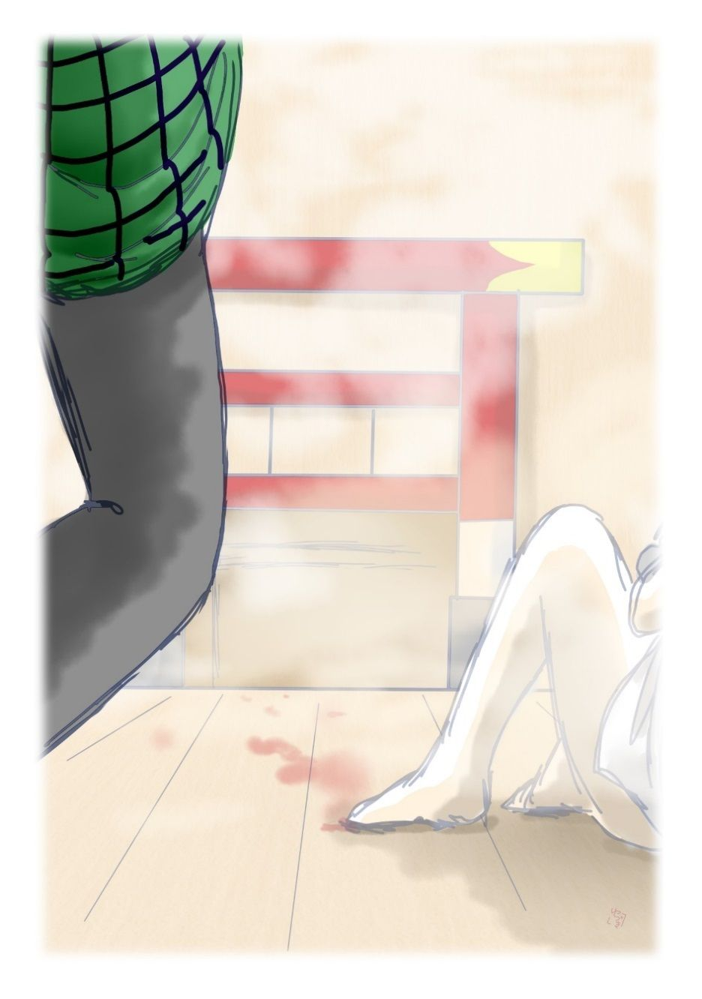

| 血潮の浴槽: 銭形平次捕物全集第33話 (銭形倶楽部) | |
| 野村胡堂 | |
| ZENIGATA CLUB (2018) | |

一
元飯田橋の丁子 風呂の女殺しは、物馴れた役人、手先もたった一目で胸を悪くしました。これほど残酷で、これほど巧妙で、これほど凄い殺人は滅多にあるものではありません。
少し順序を立てて話しましょう。
滅法暑かった年のことです。八朔 から急に涼しくなりましたが、それでも日中は汗ばむ日が多い位、町の銭湯なども昼湯の客などは滅多にありません。わけても女湯はガラ空きで未刻 （午後二時）から申刻 （四時）までに入る客というのは、大抵決った顔触れと言っても宜い位でした。
旗本のお妾 のお才が出て、町内の金棒引------家主の佐兵衛の女房で、若くて少しは綺麗なのが自慢の------お六が入ったのは丁度未刻 半 （午後三時）、番台に誰も居なかったので、
「ちょいと、今日は。誰も居ないのかえ、気楽ねえ」
そんな事を言いながら、着物を脱いで、少し乾いた流しを爪先歩きに石榴 口 から静かに入りました。
そこまでは無事でしたが、間もなく、
「あッ、た、大変ッ」
お六は鉄砲玉のように石榴口から飛出すと、流しに滑って物の見事に仰け反りました。
「どうなすったんです、御新造さん」
番台へ登ろうとしていた丁子風呂のお神さんと、釜前に居た三 助 の丑松は、両方から飛んで来てお六を抱き起しました。
「お怪我をなさいませんか」
よくあるやつで、流しへ滑って転んだとばかり思い込んだのです。
「あッ血」
起して見ると、お六の半身を桃色に染めて、紛れもない血潮。
「中に、人が」
お六は上半身を起して一生懸命石榴口を指 しますが、あまりの驚きに、口もきけません。

「浴槽 の中に、何かあったんですか」
三助の丑松は、お六をお神さんに任せて、石榴口から中を覗きました。
「あッ死んで居る」
薄暗い浴槽の中ですが、慣れた眼には、たった一と目で、その中に若い女が、俯 向 になって、上半身を沈めているのが判ったのです。
「どうしたのさ」
お神さんも続いて覗きました。三 助 の丑松はそれを少し退かせて、油障子の天窓から入る、午後の陽を一パイに石榴口から入れて見ると浴槽の中は、さながら蘇 芳 を溶いたよう、その中に、上半身を沈めた恰好になって若い女が死んでいるのですから、その凄さというものはありません。
夕陽を受けた深海の水 藻 のような黒髪、真赤な頸、肩から胴腰下は水の上に浮いて、トロリとした凝脂 がそのまま、赤い水に溶け込んでしまいそうにも見えるのでした。
それよりも恐ろしかったのは左 肩胛骨 の下へ、背後からザクリと刺した少し長目、直 刃 の短刀で、籐を巻いた柄 、形ばかりの鉄の鍔 、荒 砥 で菜切庖丁のように磨 いだ肌などを見ると------これは後で解ったことですが------能登の国から来たという丑松の持物で、江戸の人の眼からは、山奥の猟師か、鯨 や鮫 を割く漁師でもなければ持っていそうもない不思議なものでした。
「ヒ、人殺しッ」
お神はとうとう悲鳴をあげて流しにヘタヘタと崩折れてしまいました。
「どうしたんだ、三 助 さん」
丁度その時男湯へ入りかけていた一人の男は、六尺褌 一つで形ばかりの中仕切りを廻って飛んで来ました。
「親分、あの中を見て下さい」
「何があるんだ、冗談じゃねえ、鯨 でも泳いで居るのかい」
親分と言われた三十がらみの遊び人風の男、同じく石榴口をヒョイと覗いて、
「あ、これは大変」
さすがに尻餅は突きませんが、顔色を変えて飛退 りました。御家人の竹といって一寸好い男、但し、元は武家の出だというせいか、妙に人づきのよくない、飯田町中の嫌われ者でした。
騒ぎは一瞬にして街中を気狂いにしました。殺されたのは、町内の物持ちで荒物屋に質屋を兼ねている、近江屋の一人娘お新、美しいのと悧発 なのと、婿選びがむつかしいのとで、神田、番町あたりへまでも噂に上っている娘だったのです。
滅多に昼下がりの銭湯などへ来る娘ではありませんが、内湯は夕方でなければ立たず、夕方から日本橋の叔母さんのところへ行って、明日は芝居見物という一年に一度のプログラムがあったので、珍しくも昼湯へ一人でやって来て、念入りに磨いていたのでした。
十八の娘盛り、恵まれざる恋 の狩人 達 はその辺にウジャウジャしているのですから、この娘 にはね られたのを縛る段になると、飯田町だけでも若い男の珠数 が出来そうです。
二
「親分、凄いの何のって、あっし もこの年になるが、まだあんな虐 たらしいのは見たこともねえ」
「この年ってほどの年かい。八、手前 は一体幾つになるんだ」
「まだ三十になるやならず------で」
「馬鹿だなア。そんな調子だから、女房になり手がねえ」
捕物の名人銭形平次は、子分の八五郎の報告を聴いて、こんなチャリ を入れながらも、真剣に考えて居る様子でした。平次は古 文 真 宝 な顔をして、物々しく考え事をするといった、重っ苦しいことは大嫌いな質 の人間だったのです。
「型の如く検屍 が済んで、第一番に三 助 の丑松、丁子 湯のお神、死骸を最初に見つけたお六などが、順々に番所に喚 びつけられた。お調べは同心の大崎鉄之進様、二合半 坂 の市蔵親分が脅かしたり、すかしたり、小半日揉んだが下手人の見当もつかねえ」
「番台には人が居なかったんだね」
と平次。
「昼は場所柄で、安旗本や御家人の外には滅多に客がないから、人の影がさすまで、お神さんは奥で冬仕度の解き物か何かやっていますよ」
「お新の来たのは知っていたのか」
「気が付いていたそうですよ。流しを通る時、顔へ陽がさしたのを、奥からチラリと見て、------ああ、何時もお綺麗なことだ------と思ったそうで」
「お妾のお才の帰ったのと、お六の来たのは知らなかったんだね」
「その時丁度お勝手の煮物を見に立ったそうです。どうせお才やお六は昼湯の定連で、勘定は月極めになっているから、気にもかけなかったでしょう。お才は富士見町の旗本、黒木三之介様のお世話になっている身体で、何日 も夕方までには、うんとめかし込んで置かなければならず、お六はお引摺りの日 髪 日 湯 で、おまけに疳 性 と来ているから、混んでからの湯なんかへ入る女じゃありません。この二人は大抵未刻 から申刻 がらみの刻限に来るそうです」
「丑松は------」
「能登の国から三年前に来て、金を溜めるより外に望みのない男で、湯屋の株を買うのを、大名になるよりも出世だと思い込んでいますぜ」
「丑松でなきゃア、お才だ。------いやまだ下手人と決めるには早いが、女湯の浴槽 の中で、背後から人間を刺せるのは、外にありそうもないじゃないか」
と平次。
「その通りですよ親分。二合半 坂 の親分もその見当で、お才をうんと脅かしましたが、知らぬ存ぜぬの一点張でさ、あの女は面 は綺麗だが、性根はあまりよくありませんね」
「性根のよい渡り妾なんてえのはたんとあるまいよ」
「随分男を泣かせているでしょうから、お才が殺されるなら理窟は解っているが、あの女が素人の娘を殺す筈はありません。お新に男を取られたという話もないし------お新は十八と言っても、本当の箱入娘で、お才のような凄い年増と、男出入りをするような柄じゃありません」
ガラッ八の八五郎の報告は、益々微に入りますが、それにもかかわらず、下手人の見当はまるっきりつきません。
「男湯には客が一人きりかえ」
「御家人崩れの竹がいましたよ。あの野郎は男も好いし、腕っ節も評判だし、人位は害 めかねない人間ですが、お六がお新の死体を見付けた時は暖簾 を潜って入って来たばかりで、単衣 をかなぐり捨てるように、褌 一つの裸になって女湯へ廻って来たそうですから、どんな手品を使ったって、女湯の中にいるお新を刺せる道理はありません」
「竹が外から入って来た時、番台にお神さんがいたんだね」
「奥から出て来て、番台へ坐ったところへ、丁度竹の野郎が弥造か何んか拵えて、顎をしゃくりながら入って来たんですって」
八五郎の報告は行届きました。
「仕方噺に なっちゃ却ってこんがらがるぜ 、------男湯の方の陸 湯 の汲出し口から突上げる術 はないか」
「それも考えましたよ、が、中仕切が低くて相手の顔の見定めが付かないし、盲 滅法 に突いたにしても、腕か手へ怪我をさせるのが精々で、背後から肩胛骨 の下へ、三寸も刃物を叩き込むなんてえことは、思いも寄りません」
「中仕切の上は」
「細い格子で、人間はもぐれませんよ」
「弱ったな八、鎌 鼬 は刃物を置いて行く筈はないし、番台には人がいないにしても、奥から見通した場所へ、ノコノコ入って来て人一人殺して行く筈はなし、市蔵兄哥はどうして辻 褄 を合せたんだ------俺には見当もつかないよ------」
三
丁度その時でした。
「近江屋の主人 ------と仰しゃる方が見えましたが」
女房のお静が顔を出します。
「飯田町の近江屋さんだ。お通し申しな」
平次の顔は急に緊張しました。いつも大きい仕事に飛込む前の、不思議な予感が、刃 のように全身を走るのです。
「銭形の親分さん、始めてお目にかかります。もう御聞きでは御座いましょうが、たった一人の娘が飛んだ災難を受けまして------」
ひどい悲しみに打ちひしがれながらも、大 店 の主人らしい冷静と品位を崩すまいと骨を折っているような、何となく痛々しい四十五六年輩の男でした。
「近江屋さん、飛んだ事でしたねえ、十八や十九で、人手に掛っちゃ、親御さんの身になっては、諦め切れなかったでしょう」
「有難う御座います。親分さん、それにつきまして、なんとか下手人を捜し出して、娘の敵を討ってやりとう御座います。そう申しちゃ何ですが、入費はどんなに嵩 んでも構いません。出来る事なら今日にもその男を縛って、獄門に上がる顔が見てやりとう御座います。こんな事をお願いするのは江戸中にも銭形の親分さんの外には御座いません。御見かけ申して参りました」
「近江屋さん、それは何とも申上げようのないお気の毒なことだが、困ったことには、お上の御用を聞く者にも、縄張りのようなものがあります、------あの辺は二合半 坂 の市蔵親分が睨んでいるから、あっし が出しゃ張っちゃ面白くないだろうと思うが」
銭形平次はすっかり尻込みしてしまいました。そうでなくてさえ近頃は評判がうるさい ので、江戸中の御用聞に、変な眼で見られるような心持がしてならなかったのです。
「でも御座いましょうが親分さん。二合半 坂 の親分さんはお才さんとか言う女の人ばかり責めて、肝腎の一番臭いのは見向いても下さいません」
「一番臭いのと仰しゃると」
平次は膝を乗出しました。近江屋の主人の頭には、これ と決めた下手人がありそうだったのです。
「娘へ手紙をくれたり、娘の後を跟 け廻したりした男で御座います」
「そんなのは、飯田町だけにも、十人や十五人はあるだろうと言う話だが」
「でも、あの湯屋の中に居たのはたった一人で御座いますが------」
「誰だえ、それは」
「三 助 の丑松で御座います」
「えッ、------あの山猿のような男が」
「山猿と仰しゃってもまだ二十六で独身者だそうで御座います。娘が行くと嫌なことをするので、滅多に丁子風呂へは参りませんでしたが、昨日は内湯がなかったので、仕方なしに一人で参りました」
近江屋の主人の話を聞いているうちに、平次は急に元気がついて来ました。素晴らしい獲物を見つけた猟犬のように、こうなってはもう、手綱 位では押え切れません。
「二合半 坂 の兄哥には済まないが、少し心当りを当って見ましょう。------八」
「へエ」
「聴いていたろうな」
「お復習 して聞かせましょうか」
人間は少し間が抜けておりますが、記憶力は抜群で、所 謂 地獄耳と言われた八五郎です。
「お復習には及ばないが、------丑松は三年稼いでどれだけ溜めたか確かなところを捜ってみてくれ。それからお新さんを刺した直 刃 の短刀だが、あれは、丑松の持物だというが、どこでどうしてなくしたか、よく本人に訊いてくれ」
「へエ------」
「直ぐ行くんだよ、八」
「お言葉だがね親分」
「何んだえ、急に坐り直したりなんかして」
「お言葉だが------と来たね親分、銭形平次親分の一の子分で鑑識 に叶って現場へ二度も行ったこの八五郎が、それ位のことを聴かずに帰るものでしょうか------てんだ」
「馬鹿だなア、鼻の頭を無闇に擦 ると、そこが赤くなるよ。聴いて来たなら、なんだって言わないんだ」
「曝 しの手には惜しかったよ、親分」
「呆れた野郎だ」
「青の三丁持だ、------ね、こう言う種 さ。丑松は正直一途の人間で、金を溜めるより外に望みのない男だが、若いせいか、稼業柄にしちゃ、少し女癖が悪い」
「フーム」
「それから、溜めて置いた筈の金も、どう捜しても見付からず、本人もどこに隠してあるか言わない------これで二丁」
「刃物は」
「そこだよ親分、丑松は能登 の国の猟師の伜で、国にいる時はあれを使って獣を追い廻した。江戸へ出る時、道中の用心脇差代りに差して来て、釜前で鉈 代 りにして薪を割っていたが、二三日前から見えなくなったって------言うんで」
ガラッ八はすっかり有頂天でした。これだけの証拠で丑松が縛られれば、本当に天下泰平だったことでしょう。
「市蔵兄哥は、なぜ丑松を縛らないんだ、それほど証拠が揃っているのに」
平次は最後の疑いを持出します。
「お神さんが、臭い狭い三畳で針仕事をしながら始終丑松が釜前にいるのを見ていたって言うんで」
「フーム」
「お神さんが庇 っているのかと思ったが、どうもそうらしくもねえ」
ガラッ八の青の三丁握りも甚だ怪しいものになって来ました。
「よし、行って見よう。ここで考えても始まらない」
銭形平次は到頭この事件の渦中に飛込みました。
四
途中で近江屋の主人 に別れて、八五郎のガラッ八と二人、丁子風呂へ着いたのは昼頃、平次は休業中の戸を開けさして、わざわざ表口から入って見ることにしました。
番台は形の如く男女両方を見通し、左手の男湯は河岸ぷちに面して、右手の女湯は、隣りの家------今改築中の足場を組んだ建物------にスレスレになっておりますから、外から不意に流しに闖入 する路はありません。
中は大体八五郎が説明してくれた通り、この辺は湯 女 なども置かず、本当の銭湯一式で、実体に商売しております。その代り客と言っても町内の------それも近所の衆ばかり、番台が顔を知らない人などは、年に一人か二人来れば精々と言った有様です。
「私は何も存じません。ただもうびっくりしただけで」
年配のお神はおろおろするばかり、何を訊いても、八五郎の報告以上のことは一つもありません。
「お新が入って来て流しを通る時に、顔に陽が当ったと言うが陽なんかどこからも射して来る筈はないじゃないか、お神さん」
平次はお神を流しの方からさし招きながらそう言いました。
「へエ------」
お神は狐につままれた様子です。女湯は外囲いが厳重で陽の入る隙間などは一つもなく、隣りは改築中の高い家で、隙間があったところで、陽の射す道理はなかったのです。
「あの天窓は？」
と平次。
「お隣りの仕事が始まってから、職人衆が入りましたので、二た月も前から閉めっきりで御座います」
湯屋の流しの上、横手の方には油 障子 の天窓がありますが、恐ろしく高いので、踏台を重ねても手が届きそうもありません。それが皆厳重に閉って居るのですから、そこから飛込んで来て、湯の中の女を刺したのでないことはあまりに明らかです。
「お神さんの部屋というのを見せて貰おうか」
「へエ、どうぞ」
流しの後ろ、大きな釜の横手、三 助 の通路から、遠く番台まで見透せるところに、お神が仕事をしていたという三畳敷があり、障子を隔 てて、これも形ばかりのお勝手が付いております。
「ここに居れば、入って来た客も、三助の様子も一と目で解るだろうね」
と平次。
「それはもう、釜前から、女湯の流しの板敷を半分と、番台から、男湯の入口まで一と目に見えます」
「お神さん、有難う。そんな事で宜いだろう」
「有難う御座います。親分さん」
お神は何となくホッとした様子です。
釜前の火は消えたまま、三助の丑松は一度番所に引かれましたが、疑いが晴れて、今日は帰っています。
「三助さん、災難だったね」
「へエ------」
これも市蔵の仲間の御用聞と思ったせいか、仏頂面をしてろくに顔も見せません。まだ若い武骨な男ですが、背の低い腕の長い恰好は、何となく動物的で、不思議な精力を発散しております。
「三助さんは能登だってネ」
「そうで御座いますよ」
「能登では、獣 や鳥を取るのにはどうするんだろう。まさか弓 矢 じゃあるまいね」
平次は妙なことを訊き出しました。
「鉄砲で撃つだよ」
丑松はどこまでもぶっきら棒です。
「組討をするとか、槍を投げ付けるとか、罠 を仕掛けるという事はないのかえ」
「罠は狐に掛けるが、滅多に掛らないよ。獣と組討は仁田 四郎 だんべえ」
「仁田四郎はよかったね、ハッハッハッハッ」
「槍は使うだよ。おらも少しはやるが、国には名人が居るだ」
「そうだろうね。三助さんも、投槍位やるだろう」
「少しはやったが、あまりうまくねえよ。だから江戸サ来て人様の垢 を流しているでねえか」
「成程これは理窟だ。------ところであのお新を刺した短刀は、ありゃ何に使うのだえ」
平次は話題を進めました。
「猟に行く時、持って行くだ」
「あれで獣を刺したことがあるかえ」
「あるとも、三度------いや四度かな」
「面白いだろうな」
「面白くはねえよ、獣だって刺されりゃ良い心持のものじゃねえ」
「成程」
平次の興味は次第に薄れて行くようでした。やがて八五郎を促 して、隣りの建築場を一と通り、丁度指図をしている棟梁 を見付けると、
「棟梁、ちょうど宜い塩梅だ、この足場へ登らせてくれないか」
平次は妙なことを言いました。
五
「おや、銭形の親分さん、御苦労様で、丁子風呂の方の御用件で------」
棟梁は丁寧に挨拶しながらも、妙に好奇の眼を光らせます。
「まアそんなところだ。------昨日あの騒ぎのあった時は、職人衆は皆んなどこにいなすったんだ」
「丁度お茶が入って、職人が皆んな向うの母家 の方へ行っておりましたよ」
「そこからここは見えるだろうね、棟梁」
「土蔵 の蔭ですから、少しも見えません」
「お茶は何刻 位かかるだろう」
「未刻 半に始まって、四半刻もかかりやしません、何分この仕事は急がせられておりますから」
「どうも有難う。------ところで、ちょいとここの足場の上へ登っても宜いだろうね」
「構いませんとも。------だが、素人衆は足許が定まりませんから、随分危い芸当ですよ」
「なアに、気をつけさえすれば、------」
平次は足場の上へ、何の苦もなくスルスルと登って行きました。
「これは驚いた。------成程さすがは銭形の親分だけある。玄 人 もあんなに身軽には行かない」
棟梁とガラッ八は、下から口を開けて眺めております。
丁度丁子風呂の女湯の天窓 のところへ行くと、平次は手を伸して、油障子を開けました。少し骨は折れますが、それでも大してキシミもせずに、スラスラと開きます。
平次はそこから女湯を見おろしてそのまま足場を降りて来ました。
「親分、見当はつきましたか」
「------」
ガラッ八の顔を睨み据えるように、黙って頭を振ります。余計な事を言うなという謎 でしょう。
棟梁に礼を言って、今度は御家人 竹のところへ------
「今日は。竹兄哥 は在家 かえ」
「あ、銭形の親分」
磨き抜いた格子の内で、柄にもなくとぐろを巻いて草 双紙 を見ていた子分は、横っ飛びに奥へ取次ぎました。
「これこれ、何を騒ぐ、丁寧にお通し申すんだぞ」
少し武家言葉の残っているのが味噌の御家人の竹、銭形の平次を迎え入れて、念入り過ぎるほど念入りな挨拶です。
「ところで竹兄哥。お前さんはヤットウの方は大した腕だというが、あの丁子風呂のお新を殺した下手人は、どの位の使い手だろう。現場も死骸も見たのが幸い、心得のあるお前だから、これは後学のために聴いて置きたいんだが------」
平次の問 はもっとも過ぎるほどでした。御家人竹は、暫らく考え深そうに腕を組んで、半眼に眼をつぶって、唸 っております。
まだ三十そこそこでしょうが、青 髯 のある、凄いほどの男前。これが身を持崩して、腕も家柄も申分のないのが、両刀を捨てて、遊び人の仲間に陥込ませた原因でしょう。
「剣術を知らない人間の仕業だろうと思うが------どうだろう、銭形の親分」
「と言うのは？」
「あの直刃 の短刀は肩胛骨 の下へ槌 で打込んだように真っ直ぐに入っていた。双手に持って、猪 突 きにしなければ、あんな具合に入るものじゃない、------それに刃が斜になっていたと思う。傷口を見た者に訊けば解ることだが」
「------」
平次はゴクリと固唾 を呑みました。
「それにあの刃物は、心のある人間の使う道具じゃない。柄に籐を巻いた、恐ろしい荒い刃で、おまけに菜切庖丁の砥石 でゴシゴシやっている」
「すべりを防ぐために、怨刃 を合せるということもあるが------」
と平次。
「それならばもう少し気のきいた刃物を使うのが本当で」
「そうしたものだろうか、------いやどうも有難う。お蔭で、大きに眼鼻がついたような気がする」
平次は丁寧に礼を言って、そっと外へ出ると、
「八、大急ぎだ、丁子風呂へ駆け込んで、お神のいた三畳から、女湯の流しを見張っていろ。一寸も眼を離すんじゃねえぞ」
「へエ------」
変なことを言い出します。しかし、変な言い付けには慣れているガラッ八は、そのまま宙を飛んで丁子風呂へ行ったことは言うまでもありません。
六
「あッ、陽が流しへ射した、お神さん」
三畳に頑 張 っていたガラッ八は、いきなり飛上がりました。その時はもう、射していた陽はスーッと消えて、元の薄明るい流しになっているのでした。三畳から飛出して見ると、流しの上の天窓にほんの少しばかり、申刻 頃の陽が当って、油障子の一部を、カッと燃えるように明るくしているのでした。
「八、陽が入ったか」
不意に後ろから肩を叩く者があります。
「おや、親分」
「よしよし、お前の開けっ放しの面 が、陽が流しへ射したと言っているよ------今度はお才に逢って見よう。来い」
平次とガラッ八はまだ番所へ預けたままになっているお才のところへ駆付けました。
「おや銭形の兄哥。又この市蔵に鼻を明かさせる積りかい」
五十男の市蔵、------少し頑固で、顔の古さを唯一の誇 にしている市蔵------には何となくひがみがありました。
「そんなわけじゃありませんが、二合半 坂 の親分、下手人は猿のように身軽で、恐ろしく腕の出来た野郎のように思うが、どんなものでしょう」
平次はいつものように下手に出ました。
「ハテネ、そんな野郎というと丑松の外にはないようだが------」
「とにかく、女や子供じゃありませんぜ、------ちょいと、そのお才に訊いてみたいことがあるんですが」
「あ、何なと、御自由に」
市蔵は少し皮肉に身を退きました。
「お才、------真直に言って貰いたいが」
平次は言いかけて凝っとこの豊満な年増の顔を見やりました。女盛りの脂ののったお才、色白で髪の多い具合、媚 を含んだ、無恥な目差し、紅い唇------など、如何にも罪の深さを思わせるに充分な女です。
「これより当り前に言いようがないじゃありませんか。近江屋のお嬢さんとは、顔を合せても、挨拶をした事もない仲さ、殺すわけなんかあるものか」
少し疳 が亢 ぶっている様子で、キリキリと美しい眉を釣上げながら、平次の顔を正面から振り仰ぎます。
「そんな話じゃない。------俺は口幅ったいようだが、人を無実の罪に陥すのは大嫌いさ。近江屋の娘を殺したのは、お前でない事はよく解っているよ」
「------」
お才は素直にうなずきましたが、後ろの方では二合半坂の市蔵が眼を光らせております。
「お前が丁子風呂にいるうちにお新が入って来たのか、それとも、お前とお新は逢わなかったか、それから訊きたいんだよ」
「近江屋のお嬢さんは、私が着物を着て出ようとする時入って来ましたよ。あの娘が着物を脱いだ時、私は暖簾をくぐっていました」
「番台に人はいなかったね」
「ええ」
「女湯の天窓 が開いて、陽が射していたのを知っているかい」
「いいえ」
「有難う。それだけ言ってくれたのでも、大助かりだ------ところでもう一つ、お前は丁子風呂へ行く刻限は大抵決っているのかえ」
「大抵未刻 半 前に行って申刻 までいるんですが、あの日は旦那が釣の帰りに寄る筈だったのでいつもよりは半刻も早く帰りましたよ。丁子風呂を出たのは精々未刻 半 頃だったでしょう」
「フーム」
「で、もう一つ、これは大事の事なんだが、お前位綺麗だと随分怨まれる口も多いだろう。今まで何かの都合で別れた男で、うんと怨んでいる者はないだろうか」
平次の問は次第に核心に触れて行きます。
「まア、そんな事を。ホ、ホ、ホ」
お才はこの期 に臨 んでもしな を作らずにいられない女だったのです。
「冗談じゃない、大真面目だよ。たとえば田舎にいる時、猟師に思われたとか、未練のある男を、無理に振り切った覚えがあるとか」
「まア親分さん、切れた男は随分ありますが、怨まれる筋なんかありゃしません。これでも江戸で生れたんですもの、まさか猟師とはねえ」
「そうか------丁子風呂の丑松も元は猟師だが、あの男はちょいちょい変な事をしなかったかい」
「やりましたよ、あんな風をしているくせに随分いやらしい三助じゃありませんか」
「御家人の竹とは懇意にしたことはあるまいネ」
「いえ」
お才の言葉は氷のように素っ気のない冷たさです。
「有難う。こんな事でよかろう」
平次は市蔵に礼を言って、もう一度湯屋へ引揚げて来ました。
釜前の板で拵えた台に腰を下ろして、火を焚 くんでもなく、ションボリ している丑松を見ると、
「又来たぜ、三助 さん」
「あ、親分さん、いらっしゃい」
「お前、嘘を吐 いちゃいけないよ」
「へエ------」
何という茫洋たる返事でしょう。
「お妾のお才に、変な事をしたそうじゃないか」
「と、飛んでもない。私は、あんなあば摺れは大嫌いで------」
丑松はムキになりました。その様子は満更嘘らしくもありません。
「それじゃ、何だってそんなに沈んでいるんだ」
「へエ、------嘘を吐くなと仰しゃるから申しますが、俺は、あの殺されたお嬢さんが可哀想で、可哀想で」
「何んだ、そんな事だったのか。大の男が泣く奴があるものか、見っともない」
平次は舌打を一つ、フラリと外へ出ました。
「どうしました、親分」
「さア解らねえ」
七
まる一日経ちました。平次は家に籠って底の抜けるような冗談を言いながら、お静やガラッ八を相手に暮しましたが、翌る日の朝。
「あッ、そうだ、間違いのねえところだ」
不意に飛上ると、行先も言わずに飛出しました。場所は八丁堀の組屋敷、若くて切れ者の与力笹野新三郎を訪ねたのです。
「お、平次、どうした」
「旦那、丁子風呂のお新殺しは、見当がつきそうです。今日中にお才を許して、家へ帰して頂けませんか」
「何んだ、そんな事か、もう少し早く言って来れば宜いのに」
笹野新三郎は妙に暗い顔をします。
「早くと仰しゃっても、平次の知恵では、これがギリギリ決着のところで------」
「あの事ならもう済んだよ」
「と仰しゃると？」
「下手人は昨夜身投げして死んだんだ。聴かなかったのか」
「えッ、下手人と言うと？」
平次の驚きが少し大袈裟 だと思ったのでしょう。笹野新三郎は落着き払って、
「昨夜遅く、お才を家へ帰したのさ。お才の疑いが晴れたわけじゃない、銭形もあんなに言うから、一度帰して、様子を見たい------と市蔵が言うんだ。人をつけさせるとよかったが、すぐ眼と鼻の先だからと思って一人で帰してやると、家へは帰らずに、今朝死骸になって牛 ガ淵 に浮いていた」
「えッ、そりゃ大変ッ。こんな事になるだろうと思いましたよ。たった一日下手な思案をしたばかりに------」
歯噛みをする平次。
「平次、どうしたと言うのだ」
「お才が旗本の妾 だという事を忘れていただけで御座います。もう逃しっこはありません。一刻経たないうちに、お新とお才を殺した下手人を縛って来ます」
平次はガラッ八を伴れて、宙を飛びました。元飯田町へ------。
「御用ッ、竹、神妙にせい」
飛込んだのは御家人竹の家。丁度子分は留守、山出しの女中一人のところでしたが、この捕物は平次もガラッ八も大骨を折りました。竹は思いの外の使い手で、ガラッ八に薄手を負わせましたが平次の投げ銭でどうやらその刀を叩き落し、漸く縄を掛けた時騒ぎを聴いて二合半 坂 の市蔵も飛んで来ました。
二三日経って、相変らずガラッ八は、親分の平次に絵解きをせがみます。
「どうして御家人竹が下手人と解ったんで、親分」
「最初は丑松じゃあるまいかと思ったが、丑松は正直者だしお新には気があったが、お才を殺す気はなかった」
「だって、殺されたのはお新ですぜ」
「それが人違いだったんだよ。お才は申刻 前に丁子風呂から帰った事はない。未刻 半頃にはきっとあの銭湯にいるんだ、------ところがあの日は旦那の都合で早く帰った。入れ替ってお新が入って来たのを、下手人は色白の裸の後ろ姿を見て、お才と間違えたんだ」
「下手人はどこにいたんで------」
「隣りの職人がお茶を呑んで居る間に、あの足場に登ったんだよ。油障子を開けると、丁度未刻 半頃の陽が流しへ落ちた。それをお神は三畳から見たんだ、------お新へ陽が当った------と言ったのを、皆んな聞き逃しているんだ」
「なアる」
「竹は油障子を開けて、女が石榴 口 から入るところを、拳 下 りに短刀を飛ばし、女が浴槽に落込むのを見定めて油障子を締め、悠々と降りた。人間はつまらないが、竹の野郎は大したものだ。あの天窓の敷居には、障子を開けた跡がはっきりと付いていたよ」
「へエ------」
「それから、知らん顔をして、丁子風呂の表から入り、着物を脱いで、裸一つで女湯に駆けつけた。ここがあの野郎の太いところさ」
「------」
「刺されたのが覘ったお才でなくて、どんなに驚いたろう。がそのうちにお才が下手人の疑いで引かれ、運がよければお才を処刑 に上げる積りで眺めていたが、昨夜許されて帰って来るのを見て途中から誘いかけて、牛ガ淵へ突き落したのさ」
「御家人の竹は、なんだってお才を殺す気になったでしょう、お才は竹を知らないって言っているのに------」
「お才は歴 とした旗本の囲い者だ。御家人崩れの遊び人と因縁があったと知れちゃ、一ぺんにお払箱になる」
「成程ね」
「何年か前にお才は御家人の竹を振り捨てたので、竹は自 棄 を起して両刀を捨てたんだろう。久し振りで逢うと、女は大旗本の寵者 になっている。ツイむらむらと殺す気になったんだろう。余計な細工をして、丑松などを罪に落す気にならなきゃア、竹も可哀想な男さ」
平次はそう言ってホロリとしました。人を縛るのが嫌で嫌でならなかったのです。
（編注）
作品中には、身体の障害や人権にかかわる、差別的な語句や表現が見られますが、本書が成立した当時の時代背景等が現代とは異なる古典的な文学作品でもあり、著者が故人でもありますので、底本のままとしました。ご理解、ご諒承のほどをお願い申し上げます。
著者---野村胡堂
挿絵---萩 柚月 © 2017
初出---「オール讀物」昭和九年十月号 文藝春秋社
底本---「錢形平次捕物全集」第二巻 河出書房 昭和三十一年五月三十一日初版
編集・発行 銭形倶楽部